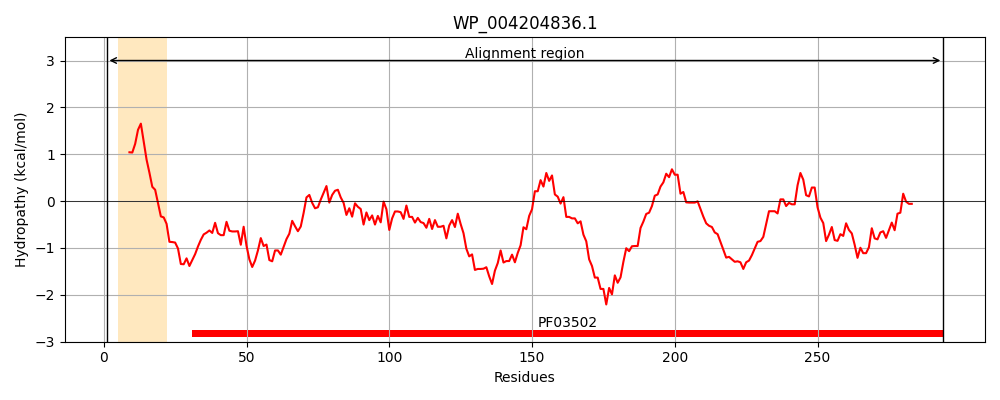
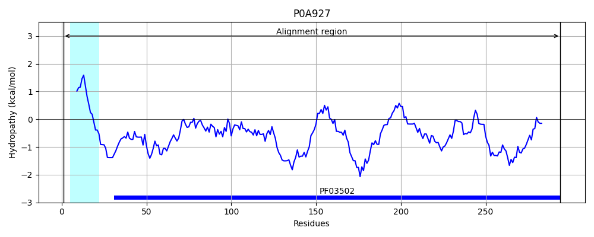
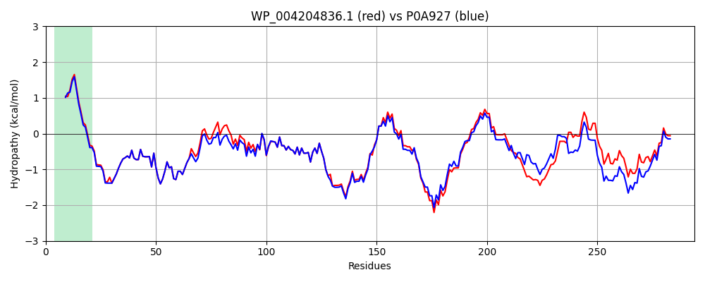

Hit Accession: P0A927
Hit TCID: 1.B.10.1.1
Hit Description: gnl|BL_ORD_ID|8625 gnl|TC-DB|P0A927|1.B.10.1.1 Nucleoside-specific channel-forming protein tsx - Escherichia coli.
Mach Len: 294
e:0.000000
Query TMS Count : 1
Hit TMS Count: 1
TMS-Overlap Score: 0.900000
Predicted Substrates:CHEBI:7647;nucleoside
BLAST Alignment:
Score: 1467 , Bit scores: 569 bits, E-value: 0.0e+00, Alignment length: 294, Percentage identity: 88
Query: 1 MKKTLLAAGAVVALSTSFTAGAAENDKPQYLSDWWHQSVNVVGSYHTRFGPQIRNDTYLEYEAFAKKDWFDFYGYIDAPVFFGGNSTAKGIWNNGSPLFMEIEPRFSIDKLTNTDLSFGPFKEWYFANNYIYDMGRNDSQEQSTWYMGLGTDIDTGLPMSLSLNVYAKYQWQNYGASNENEWDGYRFKVKYFVPLTDLWGGSLSYIGFTNFDWGSDLGDDNFYDLNGKHARTSNSIASSHILALNYAHWHYSVVARYFHNGGQWADDAKLNFGDGDFSVRSTGWGGYFVVGYNF 294
MKKTLLAAGAV+ALS+SFT AAENDKPQYLSDWWHQSVNVVGSYHTRFGPQIRNDTYLEYEAFAKKDWFDFYGY DAPVFFGGNS AKGIWN+GSPLFMEIEPRFSIDKLTNTDLSFGPFKEWYFANNYIYDMGRN QSTWYMGLGTDIDTGLPMSLS+NVYAKYQWQNYGA+NENEWDGYRFK+KYFVP+TDLWGG LSYIGFTNFDWGSDLGDD+ +NG RT+NSIASSHILALNY HWHYSVVARY+H+GGQW DDA+LNFG+G+F+VRSTGWGGY VVGYNF
Sbjct: 1 MKKTLLAAGAVLALSSSFTVNAAENDKPQYLSDWWHQSVNVVGSYHTRFGPQIRNDTYLEYEAFAKKDWFDFYGYADAPVFFGGNSDAKGIWNHGSPLFMEIEPRFSIDKLTNTDLSFGPFKEWYFANNYIYDMGRNKDGRQSTWYMGLGTDIDTGLPMSLSMNVYAKYQWQNYGAANENEWDGYRFKIKYFVPITDLWGGQLSYIGFTNFDWGSDLGDDSGNAINGIKTRTNNSIASSHILALNYDHWHYSVVARYWHDGGQWNDDAELNFGNGNFNVRSTGWGGYLVVGYNF 294 | Protein Hydropathy Plots: |
|---|
|  |  |
Pairwise Alignment-Hydropathy Plot:
|
|---|
|  |